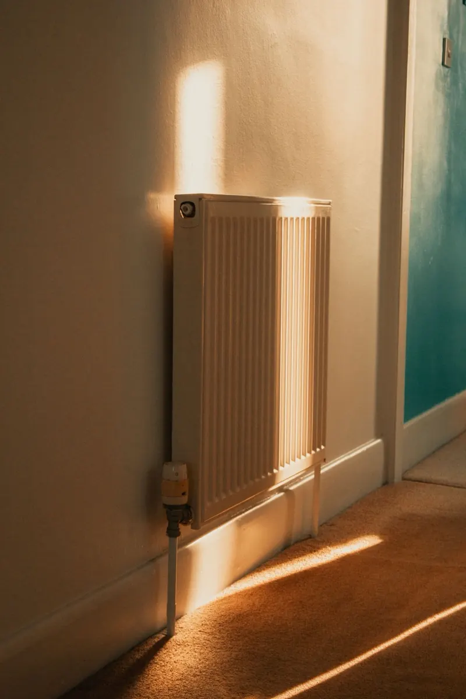
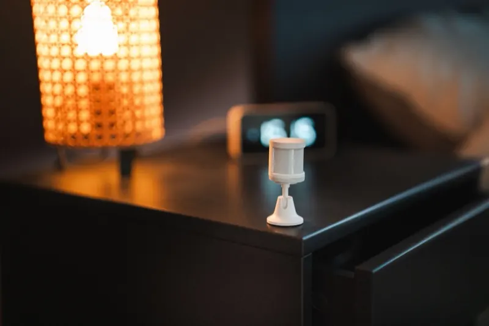

Une application par marque
- Une application et un compte par marque.
- Des objets qui ne se parlent pas entre eux.
- Des automatismes qui passent par internet.
- Un objet qui ne répond plus le jour où le service de sa marque s’arrête.
Au quotidien
Des automatismes simples, choisis avec vous selon vos habitudes. Vous gardez toujours la main : chaque lumière et chaque appareil se commande aussi comme avant.


La lumière du couloir qui s’allume doucement la nuit, l’entrée éclairée quand vous rentrez le soir, un réveil lumineux les jours de semaine.
Si vos radiateurs à eau ont déjà des têtes thermostatiques connectées, je les relie à l’application : un programme par pièce, et le chauffage qui baisse quand une fenêtre reste ouverte.
Une notification en cas de fuite d’eau sous l’évier, si la porte d’entrée reste ouverte ou si la pile d’un capteur faiblit. Elle arrive sur votre téléphone et sur ceux des proches que vous choisissez.
Une prise connectée qui mesure la consommation vous montre, jour après jour, ce que consomme l’appareil branché dessus. Vous repérez ceux qui coûtent le plus.
« Je pars » éteint ce qui doit l’être. « Bonne nuit » éteint les lumières et vous prévient si une fenêtre est restée ouverte.
En option, une ancienne tablette fixée dans l’entrée peut devenir l’écran de commande de la maison, si elle affiche encore l’interface.
Pour le chauffage, je ne m’engage qu’après avoir vu vos radiateurs. Si votre projet demande des travaux électriques ou une intervention sur l’installation de chauffage, il faut les confier à un professionnel qualifié, que vous choisissez et payez directement.
L’application
C’est elle que vous ouvrez tous les jours. Je la règle avec vous, pour qu’elle soit claire, simple à lire et bien protégée.
Un tableau de bord rangé pièce par pièce, avec des icônes simples, en mode clair ou sombre. Ce qui sert le plus est en haut, le reste un geste plus loin.
De grandes tuiles et des textes lisibles, sur téléphone, tablette ou ordinateur. Chaque personne a son compte, et je peux préparer un écran plus simple pour un enfant ou un parent âgé.
Les objets reliés en local n’ont besoin d’aucun compte chez leur fabricant. Chaque connexion demande un mot de passe et un code à usage unique, et l’accès depuis l’extérieur, si vous le voulez, passe par une connexion chiffrée.
Le principe
La plupart des objets connectés demandent l’application et le compte de leur marque. Je les relie à un petit boîtier installé chez vous, qui les fait fonctionner ensemble dans une seule application.
En local
Le boîtier est chez vous. Les appareils reliés en local ne passent pas par les serveurs de leur fabricant : ils continuent de fonctionner, avec leurs automatismes, quand la connexion tombe.
Compatibilité
Souvent, mais pas toujours. Je vérifie vos objets un par un, avant tout achat, et je vous dis franchement ce qui ne pourra pas suivre.
Pour les objets qui ne fonctionnent qu’avec le service en ligne de leur marque, je vous indique ce qu’ils pourront faire, et ce qui s’arrêtera si ce service ferme.
Je vérifie vos objets pendant le diagnostic. Ceux que je relie comptent comme des appareils dans le prix de l’installation, et un objet que je ne peux pas relier ne vous est pas facturé.
Deux minutes suffisent pour me dire ce que vous avez et ce que vous aimeriez. Je vous réponds par e-mail sous 2 jours ouvrés, avec mon numéro de téléphone et un créneau pour le diagnostic.